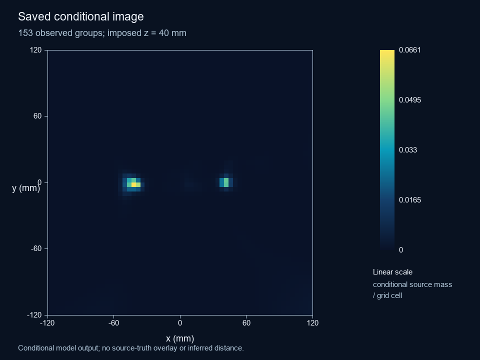
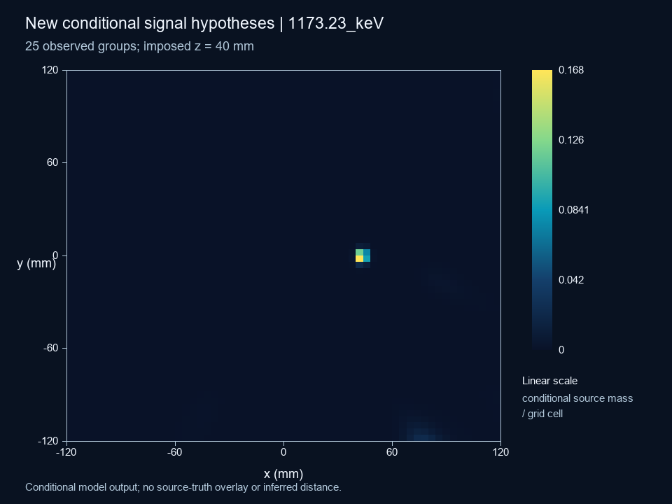
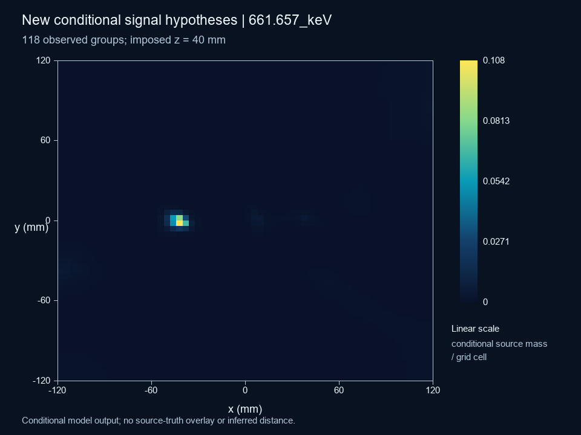
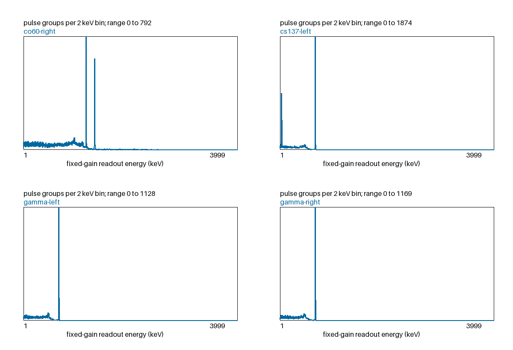
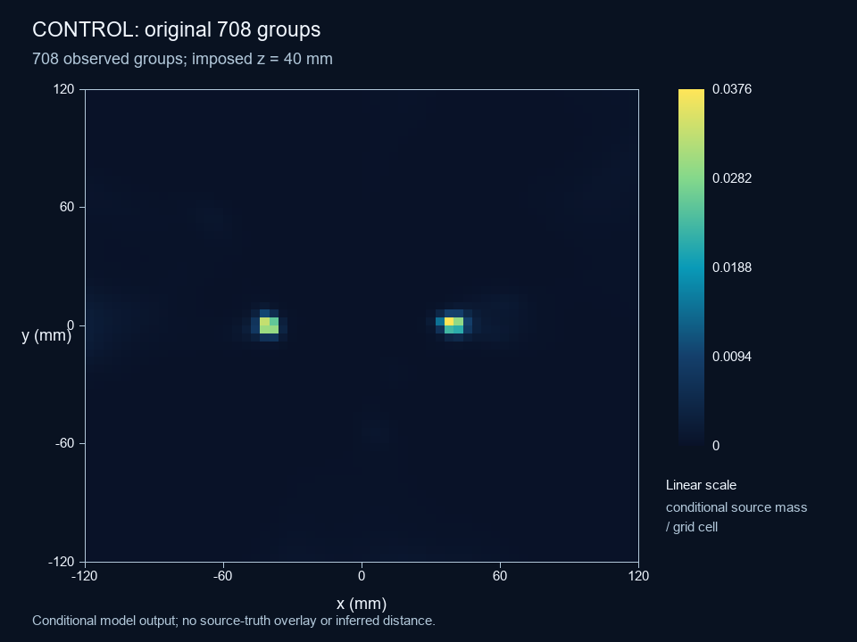
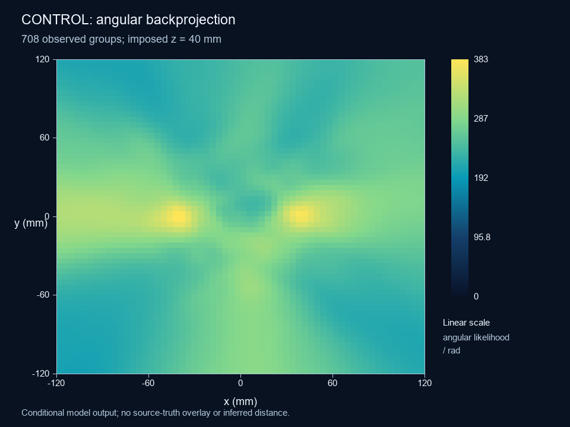
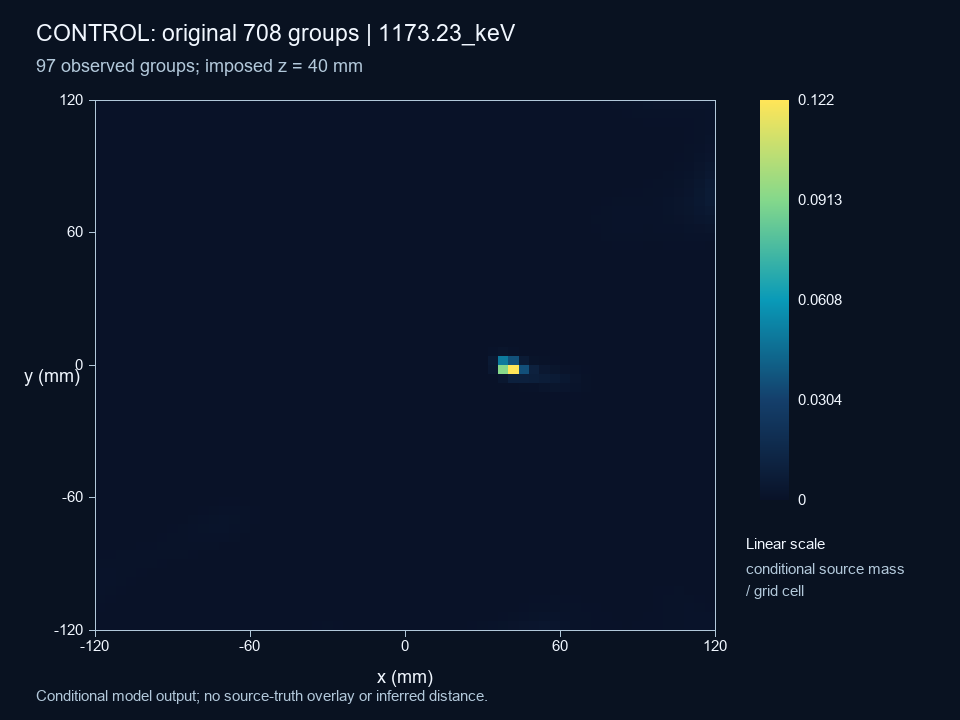
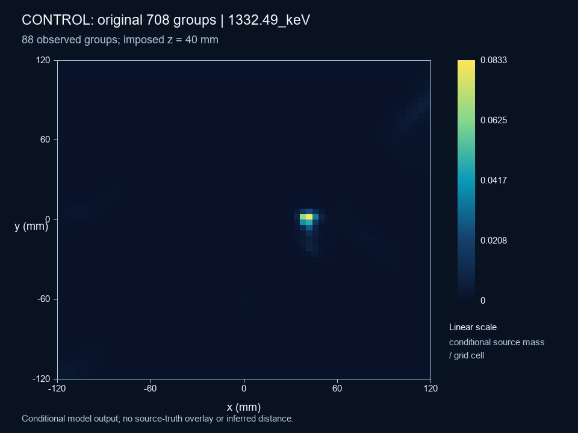
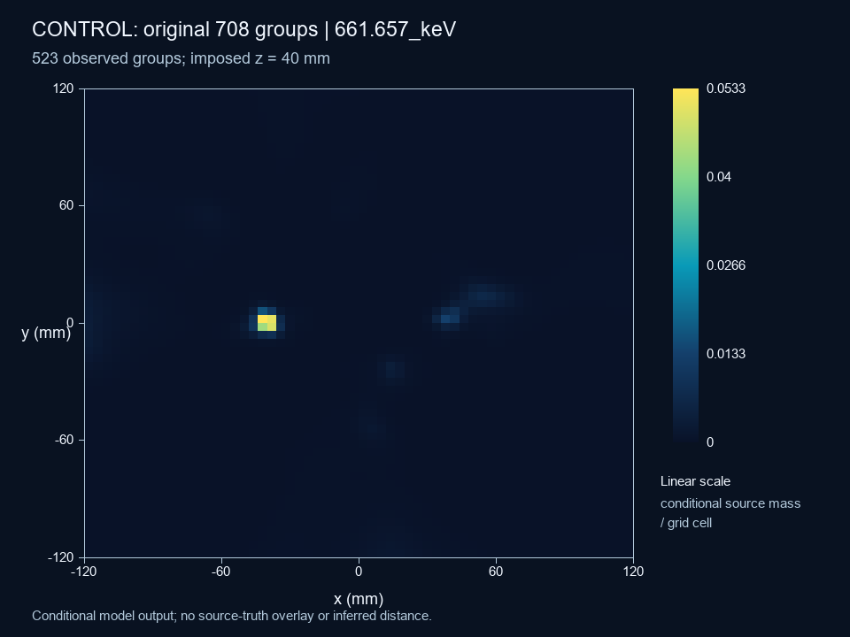

Saved data · new signal reconstruction
All four independent acquisitions enter one anonymous pool, without equalizing their yields. These are two real nuclides (Cs-137 and Co-60) plus two 662-keV monoenergetic photon controls at two source positions—not four real nuclides or simultaneous source pileup.
Nominal simulation setup only: source-to-crystal-center distance 56.57 mm and front clearance 26.4 mm. These supplied geometry values are not inferred range measurements.
Processing is complete; source localization is not experimentally validated. Range and activity remain unknown. The saved calibration covers selected X/Y pairs, not the full 34-channel response to each injection; unexplained induction and charge sharing remain explicit.
162 groups supply conditional candidates inside the fixed readout-energy windows. Every surviving sequence and its unresolved weight is retained. A map maximum is a conditional hypothesis, not an inferred source count or a validated position.

Finite vertices and uncertainty enter the event response. No candidate is normalized over the displayed square. The plane depth is imposed.
The posthoc check leaves the sample and candidate weights unchanged: weighted median absolute cone residual 22.162° among supported candidates; known compatible mass within 15° is 33.22% of all selected-group weight. Unresolved weight is 30/162. These are compatibility diagnostics, not confidence coverage or detection efficiency.
The 661.657-keV layer acquisition counts, used only after imaging, are gamma-left: 33, gamma-right: 33, cs137-left: 48, co60-right: 4. Its blind plane modes are (-42, -2), (6, 2) mm; the plane depth is imposed.
The old 708-group control and new signal-selected sample have different populations. Their maps do not establish a controlled improvement in efficiency, accuracy or hardware performance.
Exact aggregate posthoc evaluation, input hashes and limitations



The saved spectrum-only assessment supports a Co-60-compatible doublet. A single line near 661.7 keV remains ambiguous. These spectral statements do not assign an isotope to an incorrectly localized peak. Distance remains null.
Exact previous spectrum-only evidence · New conditional imaging and range-profile limits
These four exact previously published representatives teach the signal→site→cone steps. Their sites, cones and miniature accumulation displays use the legacy reconstruction. They are not new recovered events, and their illustrative maps are not the pooled results above.
Inspect the cryostat and actual saved radiation step segments. The assembly display retains 214 scored segments from four saved events; they are not complete trajectories through unscored material.
All 57,613 saved groups now have a use category: 55,157 spectroscopy only, 434 with ambiguous imaging hypotheses, 1,896 failed or incomplete, and 126 unresolved. Original readout energies are retained. No new validated imaging recovery is claimed.
Spectroscopy is usable in 55,591 groups, including the ambiguous imaging category. Terminal guard collection appears in 11,206 groups, guard transients in 17,568, and adjacent strips in 12,680. These feature counts overlap and must not be added to the use categories.
A frozen stratified sample of 400 original events was divided before truth evaluation into 200 development and 200 holdout events. All 400 original energy records match exactly. This diagnostic sample does not estimate campaign efficiency.
| Posthoc check | Development | Holdout |
|---|---|---|
| Pairing mismatches / checked conditional hypotheses | 3/22 | 5/24 |
| False splits / checked conditional hypotheses | 1/22 | 2/24 |
| Sequence candidates: correct / wrong / unknown | 2 / 2 / 40 | 2 / 6 / 40 |
| Matched conditional cells; median / 90th-percentile absolute depth error (mm) | 49; 0.143 / 0.427 | 50; 0.100 / 0.463 |
Hypotheses and sequence candidates are not independent events. Pairing compares native endpoint cells; sequence correctness is known only for uniquely traceable single-photon anchors. Depth errors apply only to matched conditional cells, not all events or experimental resolution. Unknown sequence cases stay unknown.
The two maxima near (38, −2) and (46, 18) mm use the imposed z = 40 mm plane. After omitting each group in turn, a displayed mode stays within 8 mm of these positions in 19/19 and 16/19 cases. 12 saved grid/iteration cases test numerical sensitivity. These maxima do not identify two Co-60 sources or establish resolution.
An independent analytic check reproduces all 102 channel ADC codes and fixed gains in three development groups. In the transient case, a strip ends at 15.511 keV charge-equivalent after a 271.112 keV transient; its shaped positive peak is 43.381 keV-equivalent. The mean-face ADC sum exceeds terminal charge by 12.745 keV. Separately timed strip maxima therefore cannot automatically be interpreted as collected pixel energies.
The guard case has 86 contact endpoints but a 45.904 keV mean terminal deficit. The saved-field check establishes the cause for this event: Cartesian interpolation mixes contact and neighboring noncontact grid nodes. The contact nodes have own-electrode weighting potential 1, but the continuous endpoints interpolate below 1: electron guard 0.90593–0.94087; hole guard 0.96870–1.00000 (dimensionless). All 86 contact identities agree, and the original Float32 endpoint algebra reproduces all 34 saved terminal values with exactly 0.0 keV error. This diagnoses one development event without new drift, field solves or injections. A waveform correction remains unvalidated; do not force final charge to deposited energy.
Historical development note at export: use the forward response of charge transport and the declared circuit to constrain the inverse signal model, including induced transients. The original 2,991 calibration records contain selected X/Y signals and no complete 34-channel response basis or saved drift trajectories. A supported inverse model needs that missing response information; original energies, maps and uncertainty remain intact.
Separate control · original reconstruction
The same 708 previously accepted groups are pooled using all their original cone alternatives. This control changes the image response; it does not repair their old strip/depth reconstruction or count them as newly recovered events.

All four acquisitions, no acquisition equalization, no truth overlay. Conditional source mass per grid cell; neither calibrated activity nor a probability of a true source location.
The previous finite-square normalization forced each cone to contribute the same integral inside the displayed area. A cone whose main support lay outside could therefore promote its small tail into a bright boundary. The new event response is defined before choosing the field of view and includes unresolved hypotheses and an outlier component.
Maximum response difference at identical points after expanding the field: 0.0. This checks event-response invariance; fitted map masses can still change when model support changes.

Saved angular backprojection before the conditional mixture fit. Both are model diagnostics; neither validates the original signal-derived vertices.



Original strict two-strip-per-face rejections: 39,683. The earlier truth-assisted diagnostic identified 4,184 potential candidates; that number is not a recovered yield. 284 of the 39,683 strict rejections now supply conditional hypotheses; this is not validated recovery. New validated recovered groups remain zero. Initial photon and initial nuclear-decay denominators remain separate.
| New outcome | Pulse groups |
|---|---|
| charge sharing and photon multiplicity unresolved | 434 |
| face energy mismatch | 120 |
| guard collection | 11,061 |
| missing above threshold face | 381 |
| native response incomplete | 1,896 |
| no supported conditional sequence | 12,847 |
| no supported sparse energy allocation | 142 |
| same pixel multiplicity unidentifiable | 30,665 |
| strip budget exceeded | 67 |
Native failures retain null signal quantities. Original IDs, raw scientific files, seeds and zero-deposit totals remain preserved. The software release contains no precomputed campaign demonstration.
Exact counts, denominators and method limits · Preserved settings and seeds · Legacy representative identities · SHA256 artifact manifest · Run the student software
The independent saved readout check covered 136 channels in 4 saved groups: ADC codes and fixed gain agree; maximum peak-voltage difference 9.17e-14 V. This is a software identity check, not GeGI hardware calibration.
The electronics model is the project’s declared circuit, not a verified implementation of proprietary GeGI electronics. COSI references inform calibration and ambiguity handling; their hardware settings are not copied into GeGI.
The present conditional model lacks a calibrated detector sensitivity, full cross-induction templates and laboratory resolution. The imposed-plane profile is not a confidence interval for distance. Peaks do not establish the number of sources.